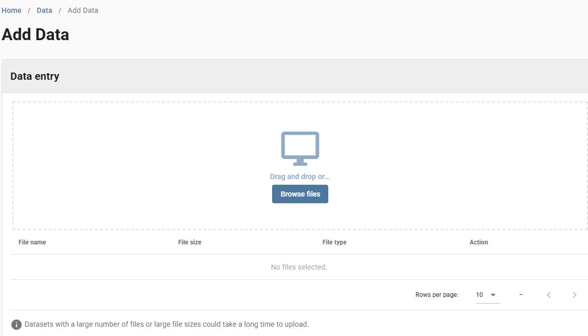
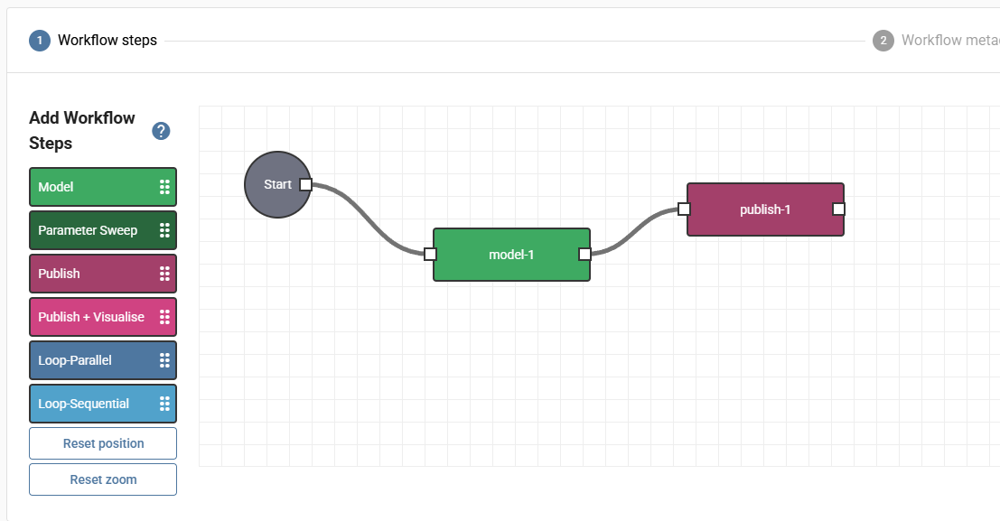
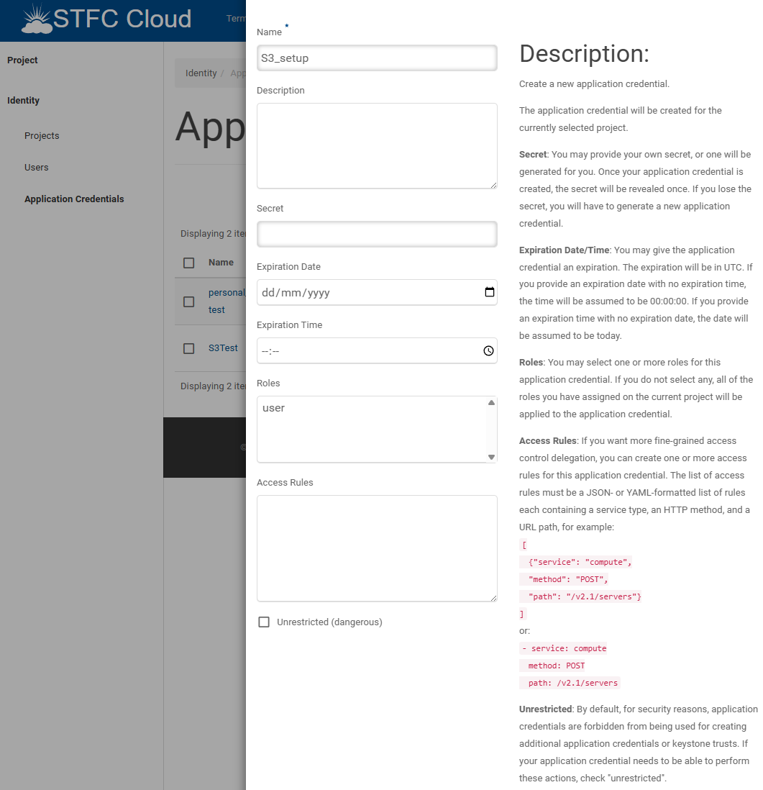
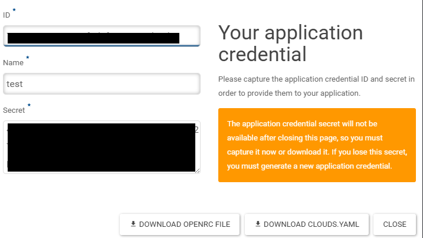
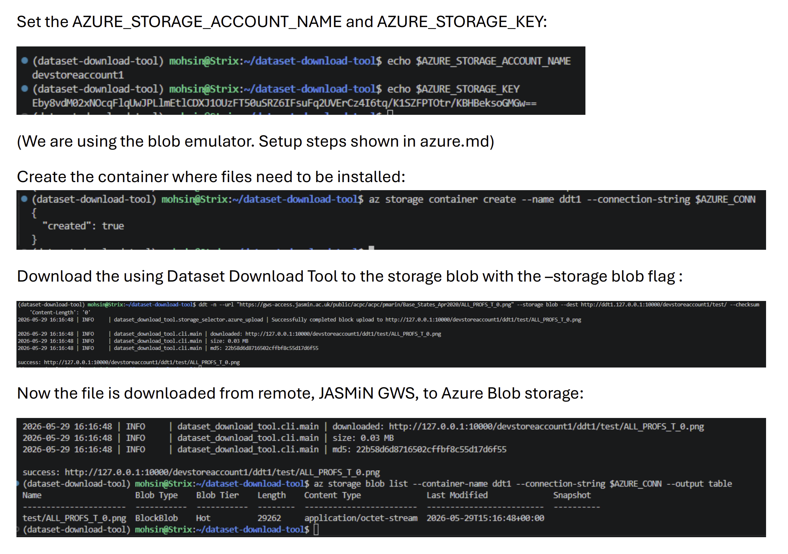

DAFNI Data Bridge¶
A unified interface for downloading files from SSH, HTTP, and FTP servers, including CEDA and JASMIN GWS, with support for saving to local disk or S3-compatible buckets.
Features¶
Protocol & Authentication Matrix¶
| Source Protocol | Authentication Options | Destination Options | Additional Capabilities |
|---|---|---|---|
| HTTP/HTTPS | • CEDA token • Username/password • No-auth (public files) |
• Local filesystem • S3-compatible buckets • Azure Blob storage |
• MD5 checksum calculation • Batch downloads (pipe-separated URLs) • Directory downloads (recursive) |
| FTP | • Username/password • Anonymous access |
• Local filesystem • S3-compatible buckets • Azure Blob storage |
• MD5 checksum calculation • Batch downloads • Directory downloads (recursive) |
| SSH/SFTP | • SSH key authentication • Username/password |
• Local filesystem • S3-compatible buckets • Azure Blob storage |
• JASMIN GWS filesystem access • MD5 checksum calculation • Batch downloads • Directory downloads (recursive) |
Core Capabilities¶
| Feature | Description |
|---|---|
| Multi-protocol support | Download from HTTP/HTTPS, FTP, SSH/SFTP sources |
| Flexible authentication | CEDA tokens, username/password, SSH keys, or no-auth for public data |
| Multiple destination modes | Save to local disk, or stream directly to S3-compatible buckets or Azure Blob storage |
| Integrity checks | Optional MD5 checksum calculation for all protocols |
| Progress tracking | Console progress bar with automatic log-based fallback |
| Batch operations | Download multiple files using pipe-separated URLs |
| Recursive downloads | Download entire directory trees from any protocol |
| Config file support | JSON-based configuration to avoid repeating command-line flags |
| DAFNI integration | Designed for use as a model step in DAFNI workflows |
| JASMIN GWS access | Direct access to JASMIN Group Workspace remote filesystems via SSH |
Supported Combinations¶
The tool supports 160+ feature combinations, including:
- 18 source/auth combinations (3 protocols × 6 auth methods)
- ×3 destination types (local filesystem, S3, or Azure Blob storage)
- ×3 download modes (single file, batch, or directory)
- Additional permutations with checksum calculation, progress tracking, and config file usage
Quick Start¶
Install the tool:
Download a public file:
dataset-download-tool --no-auth --url https://dap.ceda.ac.uk/badc/ARCHIVE_INFO/00FILES_ON_OBJECTSTORE.txt?download=1 --dest ./data/
Download with CEDA credentials:
dataset-download-tool --username $CEDA_USERNAME --password $CEDA_PASSWORD --url https://dap.ceda.ac.uk/badc/ARCHIVE_INFO/ACCESS_TEST/RESTRICTED/TOKEN_CHECK?download=1 --dest ./data/
All commands also work with the ddt shorthand:
Resources¶
User Guide
Installation¶
Prerequisites¶
- Python >= 3.12
- Access to one or more of the following (depending on your use case):
- CEDA Account and access token
- JASMIN Account with GWS access
- SSH key configured for JASMIN login nodes
Install¶
# via pip
pip install git+https://github.com/dafnifacility/dataset-download-tool.git
# via uv
uv add git+https://github.com/dafnifacility/dataset-download-tool.git
Verify Installation¶
Shorthand¶
All commands can use ddt instead of dataset-download-tool:
CLI Reference¶
Flags¶
| Flag | Shorthand | Description |
|---|---|---|
--config FILE |
-c FILE |
Path to JSON config containing download options |
--token CEDA_TOKEN |
-t CEDA_TOKEN |
CEDA access token |
--username CEDA_USERNAME |
-u CEDA_USERNAME |
CEDA username (requires --password) |
--password CEDA_PASSWORD |
-p CEDA_PASSWORD |
CEDA password (or set via CEDA_PASSWORD env var) |
--no-auth |
-n |
Use when file requires no credentials |
--ssh SSH |
Connect to SSH server | |
--url URL |
URL to download | |
--ssh-download-path PATH |
-dp PATH |
Path of file to download over SSH |
--dest DEST |
-d DEST |
Destination path or directory (default: current directory) |
--checksum |
Calculate MD5 checksum of downloaded file | |
--no-progress |
Disable progress bar | |
--storage {local,s3,blob} |
-s {local,s3,blob} |
Storage backend for the destination (default: local) |
--timeout TIMEOUT |
Request timeout in seconds (default: 30) | |
--retries RETRIES |
Maximum retry attempts (default: 3) | |
--key-filename FILE |
-kf FILE |
SSH private key file |
--debug |
Enable debug logging | |
--log-file FILE |
Path to log file |
Mutually Exclusive Groups¶
The following flags cannot be used together:
--urland--ssh-download-path—--urlis for HTTP/HTTPS/FTP sources,--ssh-download-pathis for JASMIN GWS server paths.- Authentication:
--config,--token,--username, and--no-authare mutually exclusive.--sshis not part of this group but must always be combined with--username(it selects SSH as the connection method for that username, rather than being a stand-alone auth option) and cannot be combined with--tokenor--no-auth.
Environment Variables¶
Set sensitive information as environment variables:
export CEDA_USERNAME=<username>
export CEDA_PASSWORD=<password>
export CEDA_TOKEN=<token>
export JASMIN_USERNAME=<jasmin gws username>
Reference them in commands with $VARIABLE:
dataset-download-tool --username $CEDA_USERNAME --password $CEDA_PASSWORD --url "<url>" --dest ./data/
For S3 uploads, set the following:
Exit Codes¶
| Code | Meaning |
|---|---|
0 |
Success |
1 |
Error (validation, authentication, download, or S3 failure) |
130 |
Cancelled by user (Ctrl+C) |
Logging and Debugging¶
Enable debug logging:
Write logs to a file:
dataset-download-tool --username $CEDA_USERNAME --password $CEDA_PASSWORD --url "<url>" --log-file ./download.log
Both:
dataset-download-tool --username $CEDA_USERNAME --password $CEDA_PASSWORD --url "<url>" --debug --log-file ./download.log
Download Commands¶
No Authentication¶
For publicly accessible files that require no credentials.
Example:
dataset-download-tool --no-auth \
--url "https://dap.ceda.ac.uk/badc/ARCHIVE_INFO/00FILES_ON_OBJECTSTORE.txt?download=1" \
--dest ./data/
Authentication¶
The tool supports four authentication methods depending on the data source and access requirements.
Username and Password¶
Authenticate using CEDA credentials. Register for a CEDA Archive account if you don't have one. A token is generated automatically from your credentials.
Examples:
# Using environment variables (recommended)
dataset-download-tool --username $CEDA_USERNAME --password $CEDA_PASSWORD \
--url "https://dap.ceda.ac.uk/badc/ARCHIVE_INFO/ACCESS_TEST/RESTRICTED/TOKEN_CHECK?download=1" \
--dest ./data/
# Inline credentials
dataset-download-tool --username johndoe --password P4ssW0rd \
--url "https://dap.ceda.ac.uk/badc/ARCHIVE_INFO/ACCESS_TEST/RESTRICTED/TOKEN_CHECK?download=1" \
--dest ./data/
Verify authentication
If the downloaded TOKEN_CHECK file contains "Congratulations, you have successfully authenticated with CEDA using a token." then credentials are working correctly.
Token Authentication¶
Authenticate using a CEDA access token. Get your token from the CEDA token page.
Example:
dataset-download-tool --token $CEDA_TOKEN \
--url "https://dap.ceda.ac.uk/badc/ARCHIVE_INFO/ACCESS_TEST/RESTRICTED/TOKEN_CHECK?download=1" \
--dest ./data/
SSH Key Authentication¶
Connect to an SSH server (e.g., JASMIN) and download files by remote path.
dataset-download-tool --username <user> --ssh <host> \
--ssh-download-path <remote-path> --key-filename <key> --dest <path>
Examples:
# Single file from JASMIN GWS
dataset-download-tool --username $JASMIN_USERNAME \
--ssh xfer-vm-01.jasmin.ac.uk \
--ssh-download-path /gws/pw/j07/perf_testing/1GB.zip \
--key-filename ~/.ssh/id_rsa \
--dest ./data/ --checksum
# Entire directory from JASMIN GWS
dataset-download-tool --username $JASMIN_USERNAME \
--ssh xfer-vm-01.jasmin.ac.uk \
--ssh-download-path /gws/pw/j07/perf_testing/test_download_dir \
--key-filename ~/.ssh/id_rsa \
--dest ./data/
Security
Never hardcode credentials in scripts or config files that are shared. Use environment variables or secure credential stores.
Using Configuration File¶
Use a JSON config file to avoid repeating CLI arguments. Start from the provided example:
Run with:
Examples
No auth + checksum:
{
"no_auth": true,
"url": "https://dap.ceda.ac.uk/badc/ARCHIVE_INFO/00FILES_ON_OBJECTSTORE.txt?download=1",
"dest": "./data/",
"checksum": true
}
Token + destination:
{
"token": "<ceda token>",
"url": "https://dap.ceda.ac.uk/badc/ARCHIVE_INFO/ACCESS_TEST/RESTRICTED/TOKEN_CHECK?download=1",
"dest": "./data/",
"checksum": true
}
Username/password:
{
"username": "USERNAME",
"password": "PASSWORD",
"url": "https://dap.ceda.ac.uk/path/to/file.nc",
"checksum": true
}
Boolean Flags
Boolean flags default to false. Set them with real JSON booleans in a config file:
CLI Precedence
Any flag explicitly passed on the command line overrides the same key in the config file; flags left out of the command line fall back to the config file's value. For example, the following overrides the dest from the config file but keeps everything else from it:
Download Options¶
Multiple URLs¶
Separate URLs with |:
dataset-download-tool --no-auth \
--url "https://dap.ceda.ac.uk/badc/file1.txt?download=1 | https://dap.ceda.ac.uk/badc/file2.txt?download=1"
Directory Downloads¶
Pass a directory URL to download all files within it:
dataset-download-tool --no-auth \
--url "https://data.ceda.ac.uk/badc/ARCHIVE_INFO/fbi/1989" \
--dest ./data/
GWS HTTP Downloads¶
Download files from JASMIN Group Workspace (GWS) public HTTP endpoints:
# Single file
dataset-download-tool --no-auth \
--url "https://gws-access.jasmin.ac.uk/public/perf-testing/testdir/SEAsia_HAD_1m_19910101_19911231_gridU.nc" \
--dest ./data/ --checksum
# Multiple files (pipe-separated)
dataset-download-tool --no-auth \
--url "https://gws-access.jasmin.ac.uk/public/perf-testing/testdir/SEAsia_HAD_1m_19910101_19911231_gridU.nc | https://gws-access.jasmin.ac.uk/public/perf-testing/testdir/SEAsia_HAD_1m_19920101_19921231_gridU.nc" \
--dest ./data/ --checksum
# Entire directory
dataset-download-tool --no-auth \
--url "https://gws-access.jasmin.ac.uk/public/perf-testing/testdir/" \
--dest ./data/ --checksum
FTP Downloads¶
CEDA FTP server is public — use anonymous as username and your email as password.
Info
See the CEDA FTP help page for more information.
# Single file
dataset-download-tool --username anonymous --password johndoe@email.com \
--url "ftp://anon-ftp.ceda.ac.uk/neodc/esacci/aerosol/data/AATSR_ADV/L2/v2.30/2002/07/24/20020724141127-ESACCI-L2P_AEROSOL-AER_PRODUCTS-AATSR-ENVISAT-ADV_02082-v2.30.nc" \
--dest ./data/
# Multiple files (pipe-separated)
dataset-download-tool --username anonymous --password johndoe@email.com \
--url "ftp://anon-ftp.ceda.ac.uk/neodc/esacci/aerosol/data/AATSR_ADV/L2/v2.30/2002/07/24/20020724141127-ESACCI-L2P_AEROSOL-AER_PRODUCTS-AATSR-ENVISAT-ADV_02082-v2.30.nc | ftp://anon-ftp.ceda.ac.uk/neodc/esacci/aerosol/data/AATSR_ADV/L2/v2.30/2002/07/24/20020724155203-ESACCI-L2P_AEROSOL-AER_PRODUCTS-AATSR-ENVISAT-ADV_02083-v2.30.nc" \
--dest ./data/
# Entire directory
dataset-download-tool --username anonymous --password johndoe@email.com \
--url "ftp://anon-ftp.ceda.ac.uk/neodc/esacci/aerosol/data/AATSR_ADV/L2/v2.30/2002/07/24/" \
--dest ./data/
SSH Downloads¶
Download files directly from JASMIN GWS via SSH:
# Single file
dataset-download-tool --username $JASMIN_USERNAME \
--ssh xfer-vm-01.jasmin.ac.uk \
--ssh-download-path /gws/pw/j07/perf_testing/public/testdir/SEAsia_HAD_1m_19910101_19911231_gridU.nc \
--key-filename ~/.ssh/id_rsa \
--dest ./data/ --checksum
# Multiple files (pipe-separated)
dataset-download-tool --username $JASMIN_USERNAME \
--ssh xfer-vm-01.jasmin.ac.uk \
--ssh-download-path "/gws/pw/j07/perf_testing/public/testdir/SEAsia_HAD_1m_19910101_19911231_gridU.nc | /gws/pw/j07/perf_testing/public/testdir/SEAsia_HAD_1m_19920101_19921231_gridU.nc" \
--key-filename ~/.ssh/id_rsa \
--dest ./data/ --checksum
# Entire directory
dataset-download-tool --username $JASMIN_USERNAME \
--ssh xfer-vm-01.jasmin.ac.uk \
--ssh-download-path /gws/pw/j07/perf_testing/test_download_dir \
--key-filename ~/.ssh/id_rsa \
--dest ./data/ --checksum
S3 Destination¶
Stream downloads directly to an S3-compatible bucket. Set your credentials first:
Can be used with any download method — point --dest at an S3 bucket and pass --storage s3:
# MinIO (local)
dataset-download-tool --no-auth \
--url "https://dap.ceda.ac.uk/badc/00README.txt?download=1" \
--dest "http://test.localhost:9000/data/" --storage s3 --checksum
# STFC Echo S3
dataset-download-tool --no-auth \
--url "https://dap.ceda.ac.uk/badc/00README.txt?download=1" \
--dest "https://ddttest.s3.echo.stfc.ac.uk/key" --storage s3 --checksum
Tip
See the Development Setup — S3 Setup section for configuring S3 endpoints.
Timeout and Retries¶
DAFNI Integration¶
This guide covers using the DAFNI Data Bridge on the DAFNI platform. It enables models to download datasets from CEDA or JASMIN GWS as part of a DAFNI workflow.
Config File Setup¶
On DAFNI, the tool is driven by a JSON config file uploaded as a DataSlot. Save it as download_args.json:
Supported authentication methods in the config:
no_auth— for publicly accessible filestoken— CEDA access tokenusername+password— CEDA credentials
Boolean flags
Set boolean flags to "" to enable them (e.g., "no_auth": "", "checksum": "").
Do NOT use --dest
On the DAFNI platform, do not set the dest flag in your config file. The output path is managed by the platform — overriding it will break output publishing.
Username/Password Config Example¶
{
"username": "USERNAME",
"password": "PASSWORD",
"url": "https://dap.ceda.ac.uk/path/to/file.nc",
"checksum": ""
}
Privacy
If your config contains credentials, do not share the dataset with anyone. Only you have access to datasets you upload.
Uploading the Config to DAFNI¶
- Go to the Data section and click Add Data:

-
Fill in all required fields (marked with
*), tick My data is not spatial and My data has no dates. Other fields can be set as you see fit. -
The dataset can be updated with new versions at any time.
Model Definition¶
An example model_definition.yaml is provided in the repository. In the inputs dataslot, set the Dataset Version ID in the default value with the ID generated when uploading your config.
This ID only needs to be set initially when uploading your model. If you later update download_args.json, upload a new version of the dataset and select it in workflow parameters.
Model Flow¶
The example sets up a single model step that downloads a dataset:

- model-1 — the download model step
- publish-1 — output data publication
The download_model.py script sets up directories and logging, then runs the tool via subprocess:
cmd = [
"dataset-download-tool",
"--config",
config_path,
"--dest", # DO NOT CHANGE OUTPUT PATH ON DAFNI
outputs_path,
"--log-file",
LOG_FILE,
]
result = subprocess.run(cmd, check=True, capture_output=True, text=True)
Further Examples¶
See the DAFNI example models repository for more complete examples.
Developer Guide
Development Setup¶
Prerequisites¶
- Python >= 3.12
- uv — Python package and project manager. Install uv if you don't have it.
- s3cmd — for S3 bucket testing
Clone the Repository¶
Add s3cmd to the virtual environment:
Environment Setup¶
Sync all dependencies (including optional extras) into a virtual environment:
To install a specific extra group:
Running the CLI¶
Run the tool using uv run (ensures the correct environment):
Example download with debug logging:
uv run dataset-download-tool --no-auth \
--url https://dap.ceda.ac.uk/badc/ARCHIVE_INFO/00FILES_ON_OBJECTSTORE.txt?download=1 \
--dest ./data/ --debug
Pre-commit Hooks¶
Install pre-commit hooks to run linting (Ruff) before each commit:
S3 Setup (Optional)¶
Required only if testing S3 upload functionality.
Option 1: MinIO (Local)¶
Run MinIO in Docker:
docker run -p 9000:9000 -p 9001:9001 \
-e "MINIO_ROOT_USER=minioadmin" \
-e "MINIO_ROOT_PASSWORD=minioadmin" \
quay.io/minio/minio server /data --console-address ":9001"
Open http://localhost:9001 and login with minioadmin / minioadmin.
Configure environment:
Configure s3cmd:
Use these settings:
Access Key: minioadmin
Secret Key: minioadmin
Default Region: us-east-1
S3 Endpoint: localhost:9000
DNS-style bucket template: %(bucket)s.localhost:9000
Use HTTPS: False
Option 2: STFC ECHO S3¶
For internal STFC users who have access to OpenStack, follow these steps to set up S3 for testing.
Prerequisites: Connected to STFC VPN with access to STFC OpenStack.
Application Credentials¶
To use the OpenStack CLI you need environment variables for connecting to STFC Cloud:
- Sign in to OpenStack
- Go to Identity > Application Credentials
- Click + CREATE APPLICATION CREDENTIAL
- Only the Name field is required — everything else can be left blank

- Click DOWNLOAD OPENRC FILE and save it to the machine you will run the tool from

- Source the downloaded file to set the environment variables:
OpenStack CLI¶
Install the Python package:
Verify the CLI detects your STFC Cloud settings:
Create EC2 Credentials¶
These credentials connect to S3 buckets on STFC Cloud:
Set them as environment variables:
Configure s3cmd¶
Use these settings:
Access Key: <access_key>
Secret Key: <secret_key>
Default Region: US
S3 Endpoint: s3.echo.stfc.ac.uk
DNS-style bucket+hostname:port template: %(bucket)s.s3.echo.stfc.ac.uk
Encryption password:
Path to GPG program: /usr/bin/gpg
Use HTTPS protocol: True
HTTP Proxy server name:
HTTP Proxy server port: 0
Verify with:
Create a test bucket to use later:
Option 3: Azure Blob Storage¶
Note
The tool supports Azure blob storage and we tested it using emulator provided by Microsoft Azure. See the Azure setup guide for details.
Architecture¶
This document gives a high-level view of how the DAFNI Data Bridge is organised and how its layers interact. For the detailed class model, design patterns, and runtime sequence diagrams, see Design.
Layers¶
The codebase is organized into four layers:
| Layer | Package | Responsibility |
|---|---|---|
| CLI | cli/ |
Argument parsing, config file loading, entry point orchestration |
| Transport | transport/ |
Authentication, HTTP session management, client construction |
| Downloader | downloader/ |
Protocol-specific file downloads, progress tracking |
| Storage Selector | storage_selector/ |
Storage backend selection, destination resolution, S3 and Azure upload |
Software Architecture Diagram¶
The diagram below shows the major components of the tool, how they are grouped into layers, and how they interact with external systems (the user, remote dataset servers, the CEDA token service, S3-compatible object storage, and Azure Blob Storage).
flowchart TB
User([User / DAFNI Model])
ConfigFile[/JSON config file/]
subgraph CLI["CLI Layer (cli/)"]
Main["main.py<br/>Entry point"]
ConfigLoader["config_parser.py<br/>ConfigLoader"]
end
subgraph Transport["Transport Layer (transport/)"]
Client["client.py<br/>Client"]
Auth["auth.py<br/>Auth"]
Session["session.py<br/>SessionManager"]
end
subgraph Downloader["Downloader Layer (downloader/)"]
Factory["__init__.py<br/>get_downloader()"]
Base["base.py<br/>BaseDownloader"]
subgraph Services["services/"]
HTTP["HTTPDownloader"]
GWS["HTTPDownloaderGWS"]
FTP["FTPDownloader"]
SSH["SSHDownloader"]
end
Progress["progress_logger.py"]
end
subgraph StorageSelector["Storage Selector Layer (storage_selector/)"]
UpFactory["__init__.py<br/>get_uploader()"]
BaseUp["base.py<br/>BaseUploader"]
S3Up["s3_upload.py<br/>S3Client"]
AzUp["azure_upload.py<br/>AzureBlobClient"]
SelUtils["selector_utils.py<br/>resolve_destination()"]
end
subgraph External["External Systems"]
CEDA[("CEDA Token<br/>Service")]
HTTPSrv[("HTTP/HTTPS<br/>Servers")]
FTPSrv[("FTP Servers")]
SSHSrv[("SSH/SFTP<br/>Servers")]
S3[("S3-compatible<br/>Object Storage")]
AzBlob[("Azure Blob<br/>Storage")]
end
User -->|command-line args| Main
ConfigFile -.->|--config| ConfigLoader
Main --> ConfigLoader
Main --> Client
Client --> Auth
Client --> Session
Client --> Factory
Factory -->|selects by URL| Services
Services -.->|inherits| Base
Auth -->|POST /api/token/create/| CEDA
Session -.->|HTTP with retry| HTTPSrv
HTTP --> HTTPSrv
GWS --> HTTPSrv
FTP --> FTPSrv
SSH --> SSHSrv
Base --> Progress
Base --> SelUtils
Base --> UpFactory
UpFactory --> S3Up
UpFactory --> AzUp
S3Up -.->|inherits| BaseUp
AzUp -.->|inherits| BaseUp
S3Up --> S3
AzUp --> AzBlob
classDef layer fill:#e3f2fd,stroke:#1565c0,stroke-width:2px
classDef external fill:#fff3e0,stroke:#e65100,stroke-width:2px
classDef actor fill:#f3e5f5,stroke:#6a1b9a,stroke-width:2px
class CLI,Transport,Downloader,Services,StorageSelector layer
class CEDA,HTTPSrv,FTPSrv,SSHSrv,S3,AzBlob external
class User,ConfigFile actorThe main() entry point in the CLI layer delegates argument handling to
ConfigLoader, then constructs a Client in the transport layer. The
Client sets up authentication and an HTTP session (with retry logic) and
uses the get_downloader() factory to pick a concrete downloader from the
downloader layer based on the URL protocol. Each concrete downloader talks
to its own external protocol endpoint. The storage_selector layer abstracts
where data is written: a storage parameter ("local", "s3", or "blob")
selects the backend, and get_uploader() returns the appropriate
BaseUploader subclass — S3Client for S3-compatible stores or
AzureBlobClient for Azure Blob Storage.
Data Flow Summary¶
The diagram below traces the main function calls made during a single
invocation of the tool, from main() through to the final DownloadResult.
Each node is labelled with the function or class responsible for that step.
flowchart TD
Start(["main()"]) --> Parse["ConfigLoader.parse()<br/><i>Parse CLI args + optional JSON config</i>"]
Parse --> ClientCtor{"Client constructor"}
ClientCtor -->|token| CI1["Client.__init__()"]
ClientCtor -->|credentials| CI2["Client.from_credentials()"]
ClientCtor -->|SSH key| CI3["Client.ssh_client()"]
ClientCtor -->|FTP login| CI4["Client.ftp_login()"]
CI1 --> Setup["Auth + SessionManager<br/><i>Token validation + HTTP retry session</i>"]
CI2 --> Setup
CI3 --> Setup
CI4 --> Setup
Setup --> Factory["get_downloader(url, session)<br/><i>Factory: pick downloader by URL</i>"]
Factory --> Dl["Client.download()"]
Dl --> PL["ProgressLogger<br/><i>Set up progress bar</i>"]
PL --> BD["BaseDownloader.download()<br/><i>Template method</i>"]
BD --> RD["resolve_destination()<br/><i>storage_selector/selector_utils.py</i>"]
RD --> DecDir{"Directory?"}
DecDir -->|yes| Rec["_recursive_download()<br/><i>Directory traversal</i>"]
DecDir -->|no| Stream["_stream()"]
Stream --> DecDest{"Storage?"}
DecDest -->|local| WF["_write_file()<br/><i>Single file to local disk</i>"]
DecDest -->|s3 or blob| Remote["remote_path_upload()<br/><i>Delegate to get_uploader()</i>"]
Remote --> UpFactory["get_uploader(storage, endpoint)<br/><i>Factory: pick uploader</i>"]
UpFactory -->|s3| S3["S3Client.upload()<br/><i>Multipart upload to S3</i>"]
UpFactory -->|blob| Az["AzureBlobClient.upload()<br/><i>Block upload to Azure Blob</i>"]
Rec --> Result["DownloadResult<br/><i>url, destination, size, checksum</i>"]
WF --> Result
S3 --> Result
Az --> Result
Result --> End([return to user])
classDef entry fill:#f3e5f5,stroke:#6a1b9a,stroke-width:2px
classDef decision fill:#fff3e0,stroke:#e65100,stroke-width:2px
classDef result fill:#e8f5e9,stroke:#2e7d32,stroke-width:2px
class Start,End entry
class ClientCtor,DecDir,DecDest decision
class Result resultFor the detailed class model and runtime sequence diagrams, see Design.
Design¶
This document describes the detailed design of the DAFNI Data Bridge — the classes that make up the implementation, the design patterns they use, and the runtime interactions between them. For a higher-level view of the system, see Architecture.
Class Diagram¶
The class diagram below shows the main classes in the tool and their
relationships. The BaseDownloader abstract class is at the heart of the
downloader layer — concrete downloaders (HTTPDownloader, FTPDownloader,
SSHDownloader, HTTPDownloaderGWS) implement the protocol-specific behaviour.
The storage_selector layer provides a parallel abstraction for storage
backends via BaseUploader and its concrete subclasses.
classDiagram
class ConfigLoader {
-parser: ArgumentParser
+parse(argv) Namespace
-_build_parser() ArgumentParser
-_load_config_file(path) dict
-_merge(cli_args, file_data) Namespace
-_validate(config) None
}
class Auth {
-_token_info: TokenInfo
+__init__(token)
+from_credentials(username, password, timeout)$ Auth
+token: str
+headers() dict
}
class TokenInfo {
+access_token: str
+token_type: str
}
class SessionConfig {
+timeout: int
+max_retries: int
+backoff_factor: float
+retry_statuses: tuple
}
class SessionManager {
-_config: SessionConfig
-_auth: Auth
-_session: Session
+session: Session
+config: SessionConfig
+update_auth(auth)
}
class Client {
-_token: str
-_session: Session | FTP | SSHClient
-_downloader: BaseDownloader
+__init__(url, token, session, timeout, max_retries)
+from_credentials(url, username, password)$ Client
+ssh_client(url, hostname, username, key_filename)$ Client
+ftp_login(url, username, password)$ Client
+download(url, destination, show_progress, calculate_checksum, storage) DownloadResult
+validate_url(url)$ str
}
class BaseDownloader {
<<abstract>>
#_chunk_size: int
#_session: Session | FTP | SSHClient
+download(url, destination, progress_callback, calculate_checksum, storage) DownloadResult
#_stream(url)* tuple
#_is_directory(url)* bool
#_recursive_download(url, dest, checksum, callback, storage)* list~DownloadResult~
#_write_file(...) DownloadResult
+remote_path_upload(...) DownloadResult
}
class HTTPDownloader {
+_stream(url) tuple
+_is_directory(url) bool
+_recursive_download(...) list~DownloadResult~
-_directory_contents(url) dict
}
class HTTPDownloaderGWS {
+_is_directory(url) bool
+_directory_contents(url) dict
+_recursive_download(...) list~DownloadResult~
-_get_soup(url) BeautifulSoup
}
class FTPDownloader {
+_stream(url) tuple
+_is_directory(url) bool
+_recursive_download(...) list~DownloadResult~
-_get_directory_contents(url) dict
}
class SSHDownloader {
-_sftp: SFTPClient
+_stream(path) tuple
+_is_directory(path) bool
+_recursive_download(...) list~DownloadResult~
-_directory_contents(path) list
}
class DownloadResult {
+url: str | list
+destination: Path | list
+size_bytes: int
+checksum: str | None
+size_mb: float
}
class BaseUploader {
<<abstract>>
+upload(chunk_iter, bucket, key, total_size, calculate_checksum, progress_callback)* dict
}
class S3Client {
-_client: boto3.S3Client
+CHUNK_SIZE: int
+upload(chunk_iter, bucket, key, ...) dict
-_upload_part(...) str
-_abort_multipart_upload(...) None
}
class AzureBlobClient {
-_client: BlobServiceClient
+CHUNK_SIZE: int
+upload(chunk_iter, bucket, key, ...) dict
-_stage_block(...) str
-_abort_block_upload(...) None
}
Auth --> TokenInfo : contains
SessionManager --> Auth : uses
SessionManager --> SessionConfig : uses
Client --> SessionManager : creates session via
Client --> BaseDownloader : delegates to
BaseDownloader <|-- HTTPDownloader
BaseDownloader <|-- FTPDownloader
BaseDownloader <|-- SSHDownloader
HTTPDownloader <|-- HTTPDownloaderGWS
BaseDownloader --> DownloadResult : returns
BaseDownloader --> BaseUploader : uses via get_uploader()
BaseUploader <|-- S3Client
BaseUploader <|-- AzureBlobClientDesign Patterns¶
Factory Pattern — get_downloader()¶
The get_downloader() function in downloader/__init__.py selects the appropriate downloader based on URL prefix:
| URL Pattern | Downloader |
|---|---|
Starts with GWS_BASE_URL |
HTTPDownloaderGWS |
http:// or https:// |
HTTPDownloader |
ftp:// |
FTPDownloader |
| Anything else (file paths) | SSHDownloader |
Factory Pattern — get_uploader()¶
The get_uploader() function in storage_selector/__init__.py selects the
appropriate storage backend based on the storage string parameter:
storage value |
Uploader |
|---|---|
"s3" |
S3Client — multipart upload to an S3-compatible store |
"blob" |
AzureBlobClient — block upload to Azure Blob Storage |
The storage parameter originates from the CLI (-s/--storage flag) and is
propagated through Client.download() and BaseDownloader.download() all the
way to remote_path_upload() and resolve_destination().
Template Method — BaseDownloader.download()¶
BaseDownloader defines the download algorithm in download(). Subclasses provide the protocol-specific behaviour by implementing three abstract methods:
_stream(url)— return an iterable of bytes and optional total size_is_directory(url)— check whether the URL points to a directory_recursive_download(..., storage)— handle directory traversal for the chosen storage backend
Strategy Pattern — BaseUploader¶
BaseUploader is an abstract base class that defines a uniform upload() interface. S3Client and AzureBlobClient are concrete strategies that implement this interface for their respective cloud storage providers. BaseDownloader.remote_path_upload() uses get_uploader() to select the strategy at runtime without knowing the specific backend.
Alternative Constructors — Client¶
Client uses class methods as alternative constructors for different authentication modes:
Client(url, token=...)— direct tokenClient.from_credentials(url, username, password)— generate token from CEDA credentialsClient.ssh_client(url, hostname, username, key_filename)— SSH key authClient.ftp_login(url, username, password)— FTP login
Sequence Diagrams¶
The following sequence diagrams show the runtime interactions for the main use-cases: command-line execution, authentication, and the download process itself.
CLI Execution Flow¶
This diagram traces a full invocation of the CLI from argument parsing through to the final download result.
sequenceDiagram
participant User
participant main as main()
participant CL as ConfigLoader
participant Client
participant GD as get_downloader()
participant BD as BaseDownloader
User->>main: dataset-download-tool [args]
main->>CL: ConfigLoader().parse()
CL->>CL: _build_parser() + parse_args()
alt --config provided
CL->>CL: _load_config_file()
CL->>CL: _merge(cli_args, file_data)
end
CL->>CL: _validate()
CL-->>main: args (Namespace)
main->>main: setup_logging()
alt SSH mode
main->>Client: Client.ssh_client(...)
else Token
main->>Client: Client(url, token)
else Credentials
main->>Client: Client.from_credentials(...)
else FTP
main->>Client: Client.ftp_login(...)
else No auth
main->>Client: Client(url, "no_auth")
end
Client->>GD: get_downloader(url, session)
GD-->>Client: downloader instance
main->>Client: client.download(url, dest, storage=...)
Client->>BD: downloader.download(url, dest, storage=...)
BD-->>Client: DownloadResult
Client-->>main: DownloadResult
main->>User: print successAuthentication Flow¶
Authentication can happen in two ways — a pre-existing token can be passed directly, or CEDA credentials can be exchanged for a token via the CEDA token service.
sequenceDiagram
participant Client
participant Auth
participant CEDA as CEDA Token Service
alt Direct token
Client->>Auth: Auth(token)
Auth->>Auth: _validate_token()
Auth-->>Client: Auth instance
else From credentials
Client->>Auth: Auth.from_credentials(user, pass)
Auth->>Auth: _validate_credentials()
Auth->>CEDA: POST /api/token/create/ (Basic auth)
CEDA-->>Auth: {"access_token": "..."}
Auth->>Auth: Auth(token)
Auth-->>Client: Auth instance
end
Client->>Client: create_session(auth)
Note over Client: Session headers include<br/>Authorization: Bearer tokenDownload Flow¶
The download flow shows how the BaseDownloader.download() template method
orchestrates single-file, directory, and multi-URL downloads — and how the
storage parameter routes writes to local disk, an S3-compatible store, or
Azure Blob Storage.
sequenceDiagram
participant Client
participant PL as ProgressLogger
participant BD as BaseDownloader
participant RD as resolve_destination()
participant WF as _write_file()
participant GU as get_uploader()
participant S3 as S3Client
participant Az as AzureBlobClient
Client->>PL: create_progress_bar()
PL-->>Client: (progress_callback, close_fn)
Client->>BD: download(url, dest, callback, checksum, storage)
BD->>BD: multiple_urls_split(url)
alt Single URL
BD->>RD: resolve_destination(url, dest, storage)
RD-->>BD: dest_path (Path or dict)
alt Directory
BD->>BD: _recursive_download(..., storage)
Note over BD: Downloads each file recursively
else File
BD->>BD: _stream(url) → (chunks, size)
alt storage == "local"
BD->>WF: _write_file(url, dest_path, chunks, ...)
WF->>WF: Write chunks + MD5 + progress
WF-->>BD: DownloadResult
else storage == "s3" or "blob"
BD->>BD: remote_path_upload(url, chunks, dest_path, ..., storage)
BD->>GU: get_uploader(storage, endpoint_url)
alt storage == "s3"
GU-->>BD: S3Client
BD->>S3: upload(chunks, bucket, key, ...)
S3->>S3: Multipart upload
S3-->>BD: {destination, size_bytes, checksum}
else storage == "blob"
GU-->>BD: AzureBlobClient
BD->>Az: upload(chunks, bucket, key, ...)
Az->>Az: Block upload
Az-->>BD: {destination, size_bytes, checksum}
end
BD-->>BD: DownloadResult
end
end
else Multiple URLs (pipe-separated)
BD->>BD: multiple_url_download()
Note over BD: Loop: get_downloader + download each
BD->>BD: multiple_download_result()
end
BD-->>Client: DownloadResult
Client->>PL: close_fn()Extending the Tool¶
This guide covers how to add new download protocols, destination types, and custom exceptions.
Adding a New Download Service¶
The downloader layer uses a template method pattern. To add a new protocol, you subclass BaseDownloader and implement three abstract methods, then register it in the factory.
Step 1: Create the Service¶
Create a new file in dataset_download_tool/downloader/services/, e.g. new_protocol_service.py:
from typing import Optional
from dataset_download_tool.downloader.base import BaseDownloader
from dataset_download_tool.downloader.models import DownloadResult, ProgressCallback
class NewProtocolDownloader(BaseDownloader):
"""Downloader implementation for <your protocol>."""
def __init__(self, session):
# session is whatever client object your protocol needs
super().__init__(session)
def _stream(self, url: str) -> tuple:
"""Stream data from the source.
Must return a tuple of:
- An iterable of bytes (chunk generator)
- Optional total size in bytes (int or None)
"""
# Connect to your protocol and yield chunks
total_size = ... # or None if unknown
def chunk_generator():
while data := read_chunk(self._chunk_size):
yield data
return chunk_generator(), total_size
def _is_directory(self, url: str) -> bool:
"""Check if the URL points to a directory."""
...
def _recursive_download(
self,
url: str,
destination,
calculate_checksum: bool = False,
progress_callback: Optional[ProgressCallback] = None,
) -> list[DownloadResult]:
"""Download all files in a directory."""
results = []
for file_url in self._list_directory(url):
result = self.download(
url=file_url,
destination=f"{destination}/{filename}",
calculate_checksum=calculate_checksum,
progress_callback=progress_callback,
)
results.append(result)
return results
The inherited methods handle everything else:
download()— orchestrates single/multiple/directory downloads_write_file()— writes chunks to a local file with optional MD5 and progresss3_upload()— streams chunks to S3 via multipart upload
Step 2: Register in the Factory¶
Edit dataset_download_tool/downloader/__init__.py and add your protocol to get_downloader():
from dataset_download_tool.downloader.services.new_protocol_service import NewProtocolDownloader
def get_downloader(url: str, session=None):
if url.startswith("newproto://"):
return NewProtocolDownloader(session=session)
elif url.startswith(GWS_HOST):
return HTTPDownloaderGWS(session=session)
# ... existing cases
Step 3: Add a Client Constructor (if needed)¶
If your protocol requires special session setup, add a class method to Client in transport/client.py:
@classmethod
def new_protocol_client(cls, url, **kwargs) -> "Client":
session = create_new_protocol_session(**kwargs)
return cls(url=url, session=session)
Step 4: Wire into the CLI¶
Add the new auth/protocol option to cli/config_parser.py (in the mutually exclusive auth group) and handle it in cli/main.py:
Step 5: Write Tests¶
Follow existing patterns in tests/. Key fixtures from conftest.py:
httpserver— mock HTTP server (viapytest-httpserver)mock_ftp_server— mock FTP server (viapyftpdlib)moto_s3_server— mock S3 (viamoto)
Concrete Example: FTPDownloader¶
The FTPDownloader in downloader/services/ftp_service.py is a good reference:
__init__: callssuper().__init__(session)with anftplib.FTPsession_stream: usesretrbinary()with a callback queue (deque) to produce a chunk generator_is_directory: attemptscwd()on the path — success means directory_recursive_download: lists files withnlst(), downloads each recursively
Adding a New Destination Type¶
The download destination is resolved by resolve_destination() in downloader/download_utils.py:
- Returns a
Pathfor local filesystem destinations - Returns a
dictwithendpoint,bucket,keyfor S3 destinations
BaseDownloader.download() dispatches based on the return type:
if isinstance(dest_path, Path):
return self._write_file(...)
if isinstance(dest_path, dict):
return self.s3_upload(...)
To add a new destination type:
- Extend
resolve_destination()to detect and parse the new destination format - Return a distinguishable type (e.g., a new dataclass)
- Add a corresponding branch in
BaseDownloader.download() - Implement the upload/write logic
Adding Custom Exceptions¶
All project exceptions inherit from DFTError in exceptions.py:
DFTError
├── AuthError
│ └── TokenValidationError
├── DownloadError
│ └── ValidationError
└── BucketNotFoundError
To add a new exception:
Then handle it in cli/main.py:
Testing¶
Running Tests¶
Run the full test suite:
Run with coverage report:
Test Structure¶
tests/
├── conftest.py # Shared fixtures
├── auth/
│ ├── test_ceda_auth.py # Token generation and validation
│ ├── test_ftp_auth.py # FTP authentication
│ └── test_server_status.py # Server error handling
├── downloader/
│ ├── test_ceda_ftp.py # FTP download tests
│ ├── test_ceda_http.py # HTTP download tests
│ └── test_gws_http.py # GWS HTTP download tests
└── test_s3.py # S3 upload tests
Fixtures¶
All shared fixtures are in conftest.py. Key fixtures:
HTTP Mocking (pytest-httpserver)¶
| Fixture | Description |
|---|---|
auth_url |
Mocks the CEDA token creation endpoint. Accepts status_code parameter for testing error cases. |
file_url |
Mocks a file download endpoint. Returns binary data with application/octet-stream content type. |
file_url_2 |
Second mock file for multi-download tests. |
mock_ceda_directory |
Mocks a CEDA directory listing (JSON response with items array). |
GWS Mocking¶
| Fixture | Description |
|---|---|
file_gws_url |
Mocks a GWS file download. Sets GWS_BASE_URL env var to point to the mock server. |
directory_gws_url |
Mocks a GWS directory page (HTML with "Index of" title and file links). |
FTP Mocking (pyftpdlib)¶
| Fixture | Description |
|---|---|
mock_ftp_server |
Starts a real FTP server on a random port with anonymous user and test files. Yields (host, port). |
S3 Mocking (moto)¶
| Fixture | Description |
|---|---|
moto_s3_server |
Starts a threaded Moto S3 server with a testbucket bucket. |
Utility¶
| Fixture | Description |
|---|---|
reset_logging |
Auto-use fixture that clears logging handlers after each test to prevent conflicts. |
Testing Patterns¶
Testing a New Download Service¶
- Create a mock server fixture in
conftest.py(or use an existing one) - Create a test file in
tests/downloader/ - Test at minimum:
- Single file download
- Directory download
- Error handling (auth failure, network error, invalid URL)
- Checksum verification
Example pattern:
def test_download_file(file_url, tmp_path):
server = file_url(status_code=200)
url = server.url_for("/dir/file.nc")
session = create_session()
downloader = HTTPDownloader(session=session)
result = downloader.download(url=url, destination=str(tmp_path))
assert result.size_bytes > 0
assert (tmp_path / "file.nc").exists()
Testing Authentication¶
def test_token_auth(auth_url):
server = auth_url(status_code=200)
token_url = server.url_for("/api/token/create/")
# Patch TOKEN_CREATE_URL to point to mock server
auth = Auth.from_credentials("user", "pass")
assert auth.token == "mock-token-abc"
Testing S3 Upload¶
Azurite Azure Blob Storage Emulator — Setup Guide¶
Prerequisites¶
1. Azure CLI¶
Used to interact with Azurite from the command line:
Verify:
2. Python Dependencies¶
Install the Azure Blob Storage SDK:
Starting Azurite¶
Pull the latest image:¶
Run the container:¶
docker run -d \
-p 10000:10000 \
--name azurite \
mcr.microsoft.com/azure-storage/azurite:latest \
azurite --skipApiVersionCheck --blobHost 0.0.0.0
| Port | Service |
|---|---|
| 10000 | Blob storage |
| 10001 | Queue storage |
| 10002 | Table storage |
--skipApiVersionCheckprevents version mismatch errors between the Azure SDK and Azurite.
Stop / Start:¶
Default Credentials¶
Azurite uses fixed built-in credentials, these are not real Azure credentials:
| Field | Value |
|---|---|
| Account Name | devstoreaccount1 |
| Account Key | Eby8vdM02xNOcqFlqUwJPLlmEtlCDXJ1OUzFT50uSRZ6IFsuFq2UVErCz4I6tq/K1SZFPTOtr/KBHBeksoGMGw== |
| Blob URL | http://127.0.0.1:10000/devstoreaccount1 |
Connection string:¶
DefaultEndpointsProtocol=http;AccountName=devstoreaccount1;AccountKey=Eby8vdM02xNOcqFlqUwJPLlmEtlCDXJ1OUzFT50uSRZ6IFsuFq2UVErCz4I6tq/K1SZFPTOtr/KBHBeksoGMGw==;BlobEndpoint=http://127.0.0.1:10000/devstoreaccount1;
Environment Variables¶
Set these before running the tool:
export AZURE_STORAGE_ACCOUNT_NAME=devstoreaccount1
export AZURE_STORAGE_KEY=Eby8vdM02xNOcqFlqUwJPLlmEtlCDXJ1OUzFT50uSRZ6IFsuFq2UVErCz4I6tq/K1SZFPTOtr/KBHBeksoGMGw==
Creating a Container¶
Before uploading, you must create a container (equivalent to an S3 bucket):
export AZURE_CONN="DefaultEndpointsProtocol=http;AccountName=devstoreaccount1;AccountKey=Eby8vdM02xNOcqFlqUwJPLlmEtlCDXJ1OUzFT50uSRZ6IFsuFq2UVErCz4I6tq/K1SZFPTOtr/KBHBeksoGMGw==;BlobEndpoint=http://127.0.0.1:10000/devstoreaccount1;"
az storage container create --name <your-container-name> --connection-string $AZURE_CONN
Verifying the Setup¶
Check Azurite is running:¶
Should return an XML response listing containers.List containers:¶
List blobs in a container:¶
Destination URL Format¶
When using the tool, pass the destination in this format:
For example:
Note: Always use
http://nothttps://for Azurite — it does not use SSL.
Browsing Files (GUI)¶
To inspect uploaded files visually, install Azure Storage Explorer:
- Download: https://azure.microsoft.com/en-us/products/storage/storage-explorer
- On first launch, select "Local storage emulator" and it will connect to Azurite automatically using the default credentials.

Example¶
# Run the docker container
docker run -d \
-p 10000:10000 \
-p 10001:10001 \
-p 10002:10002 \
--name azurite \
mcr.microsoft.com/azure-storage/azurite:latest \
azurite --skipApiVersionCheck --blobHost 0.0.0.0
# Set credentials
export AZURE_STORAGE_ACCOUNT_NAME=devstoreaccount1
export AZURE_STORAGE_KEY=Eby8vdM02xNOcqFlqUwJPLlmEtlCDXJ1OUzFT50uSRZ6IFsuFq2UVErCz4I6tq/K1SZFPTOtr/KBHBeksoGMGw==
export AZURE_CONN="DefaultEndpointsProtocol=http;AccountName=devstoreaccount1;AccountKey=Eby8vdM02xNOcqFlqUwJPLlmEtlCDXJ1OUzFT50uSRZ6IFsuFq2UVErCz4I6tq/K1SZFPTOtr/KBHBeksoGMGw==;BlobEndpoint=http://127.0.0.1:10000/devstoreaccount1;"
# Create a azure container (similar to s3 bucket)
az storage container create --name ddt1 --connection-string $AZURE_CONN
# Download file to blob using DAFNI Data Bridge tool:
ddt -n --url "https://gws-access.jasmin.ac.uk/public/acpc/acpc/pmarin/Base_States_Apr2020/ALL_PROFS_T_0.png" -s blob --dest http://ddt1.127.0.0.1:10000/devstoreaccount1/test/ --checksum
# Check blob for installed file
az storage blob list \
--container-name ddt1 \
--connection-string $AZURE_CONN \
--output table
API Reference
CLI Module¶
main()¶
dataset_download_tool.cli.main.main()
¶
Source code in dataset_download_tool/cli/main.py
Entry point for the dataset-download-tool / ddt command. Orchestrates:
- Parsing configuration via
ConfigLoader - Setting up logging (debug level if
--debug) - Creating the appropriate
Clientbased on auth method - Calling
client.download() - Printing results (destination, size, checksum)
Exit codes:
| Exception | Code | Message |
|---|---|---|
ValidationError |
1 | Invalid input |
TokenValidationError |
1 | Token validation failed |
AuthError |
1 | Authentication failed |
AuthenticationRequiredError |
1 | Authentication required |
HTTPError |
1 | HTTP request failed |
DownloadError |
1 | Download failed |
BucketNotFoundError |
1 | S3 or Azure upload failed |
KeyboardInterrupt |
130 | Cancelled by user |
ConfigLoader¶
dataset_download_tool.cli.config_parser.ConfigLoader
¶
Loads configuration from a JSON file and merges with CLI arguments. CLI arguments always take overwrite config file values.
Source code in dataset_download_tool/cli/config_parser.py
11 12 13 14 15 16 17 18 19 20 21 22 23 24 25 26 27 28 29 30 31 32 33 34 35 36 37 38 39 40 41 42 43 44 45 46 47 48 49 50 51 52 53 54 55 56 57 58 59 60 61 62 63 64 65 66 67 68 69 70 71 72 73 74 75 76 77 78 79 80 81 82 83 84 85 86 87 88 89 90 91 92 93 94 95 96 97 98 99 100 101 102 103 104 105 106 107 108 109 110 111 112 113 114 115 116 117 118 119 120 121 122 123 124 125 126 127 128 129 130 131 132 133 134 135 136 137 138 139 140 141 142 143 144 145 146 147 148 149 150 151 152 153 154 155 156 157 158 159 160 161 162 163 164 165 166 167 168 169 170 171 172 173 174 175 176 177 178 179 180 181 | |
Functions¶
parse(argv=None)
¶
Parse and merge configuration Returns an argparse.Namespace
Source code in dataset_download_tool/cli/config_parser.py
Loads and merges JSON config files with CLI arguments. CLI arguments take precedence over config file values.
Methods¶
parse(argv=None) -> argparse.Namespace¶
Main entry point. Parses CLI args, optionally loads a config file, merges them, and validates the result.
Parameters:
argv— Optional list of CLI arguments. Defaults tosys.argv.
Returns: argparse.Namespace with all resolved configuration values.
_build_parser() -> argparse.ArgumentParser¶
Constructs the argument parser with these groups:
- Authentication (mutually exclusive, required):
--config,--token,--username,--no-auth.--sshis a separate flag that must be combined with--username. - Download:
--url,--ssh-download-path - Session options:
--timeout,--retries,--key-filename - Download options:
--dest,--checksum,--no-progress,--storage - Logging:
--debug,--log-file
--storage / -s — selects the storage backend for the downloaded data:
| Value | Backend | Environment variables required |
|---|---|---|
local (default) |
Local filesystem | — |
s3 |
S3-compatible object storage | ACCESS_KEY, SECRET_KEY |
blob |
Azure Blob Storage | AZURE_STORAGE_ACCOUNT_NAME, AZURE_STORAGE_KEY |
The --dest format must match the chosen storage:
local— filesystem path, e.g../data/or/tmp/file.ncs3—https://[bucket].[s3-endpoint]/dir, e.g.https://mybucket.s3.example.com/mydirblob—http[s]://[container].[blob-host]/[account]/dir, e.g.http://mycontainer.127.0.0.1:10000/devstoreaccount1/mydir/
_load_config_file(path) -> dict¶
Reads and parses a JSON config file.
_merge(cli_args, file_data, explicit_dests) -> argparse.Namespace¶
Merges CLI arguments with config file data. CLI values take priority — config file values are only used for arguments not explicitly provided on the command line (explicit_dests is computed by _explicit_dests()).
_validate(config) -> None¶
Validates argument combinations:
--usernamerequires--password(unless SSH mode)--sshcannot be used with--tokenor--no-auth--sshrequires--username--sshuses--ssh-download-path, not--url- Must provide either
--urlor--ssh-download-path
Transport Layer¶
Auth¶
dataset_download_tool.transport.auth.Auth
¶
Example: auth = Auth(token="your_access_token") # with existing token auth = Auth.from_credentials("username", "password") # generate new token
Source code in dataset_download_tool/transport/auth.py
27 28 29 30 31 32 33 34 35 36 37 38 39 40 41 42 43 44 45 46 47 48 49 50 51 52 53 54 55 56 57 58 59 60 61 62 63 64 65 66 67 68 69 70 71 72 73 74 75 76 77 78 79 80 81 82 83 84 85 86 87 88 89 90 91 92 93 94 95 96 97 98 99 100 101 102 103 104 105 106 107 108 109 110 111 112 113 114 115 116 117 118 119 120 121 122 123 124 125 126 127 128 129 130 131 132 133 134 135 | |
Functions¶
__init__(token)
¶
Initialize with an existing access token
Parameters:
| Name | Type | Description | Default |
|---|---|---|---|
token
|
str
|
a valid jwt ceda access token |
required |
Raises:
| Type | Description |
|---|---|
TokenValidationError
|
if token is empty or invalid format. |
Source code in dataset_download_tool/transport/auth.py
from_credentials(username, password, timeout=30)
classmethod
¶
Generate a new access token from ceda credentials.
Parameters:
| Name | Type | Description | Default |
|---|---|---|---|
username
|
str
|
ceda account username. |
required |
password
|
str
|
ceda account password. |
required |
timeout
|
int
|
request timeout in seconds. |
30
|
Returns:
| Type | Description |
|---|---|
Auth
|
TokenAuth instance with the generated token. |
Raises:
| Type | Description |
|---|---|
AuthError
|
if token generation fails. |
TokenValidationError
|
if credentials are invalid. |
Source code in dataset_download_tool/transport/auth.py
Manages JWT token-based authentication for CEDA services.
Constructor¶
Initialize with an existing CEDA access token. Validates JWT format.
Raises: TokenValidationError if token is empty or invalid.
Class Methods¶
Auth.from_credentials(username, password, timeout=30) -> Auth¶
Generate a new token from CEDA credentials. Sends a POST request to the CEDA token service with Basic auth.
Raises:
TokenValidationError— invalid credentials formatAuthError— token service error or invalid response
Properties¶
| Property | Type | Description |
|---|---|---|
token |
str |
The raw access token string |
Methods¶
headers() -> dict[str, str]¶
Returns the authorization header: {"Authorization": "Bearer <token>"}.
TokenInfo¶
dataset_download_tool.transport.auth.TokenInfo
dataclass
¶
Dataclass holding token data.
| Field | Type | Default | Description |
|---|---|---|---|
access_token |
str |
(required) | The JWT access token |
token_type |
str |
"Bearer" |
Token type for the Authorization header |
Validates that access_token is not empty on creation.
SessionConfig¶
dataset_download_tool.transport.session.SessionConfig
dataclass
¶
Source code in dataset_download_tool/transport/session.py
Dataclass for HTTP session configuration.
| Field | Type | Default | Description |
|---|---|---|---|
timeout |
int |
30 |
Request timeout in seconds |
max_retries |
int |
3 |
Maximum retry attempts |
backoff_factor |
float |
0.5 |
Exponential backoff multiplier |
retry_statuses |
tuple[int, ...] |
(429, 500, 502, 503, 504) |
HTTP status codes that trigger retries |
Validates all numeric fields are positive on creation.
SessionManager¶
dataset_download_tool.transport.session.SessionManager
¶
manages http sessions with retry logic and authentication.
Example
auth = TokenAuth(token="your_token") # with token authentication manager = SessionManager(auth=auth) session = manager.session
config = SessionConfig(timeout=60, max_retries=5) # custom configuration manager = SessionManager(auth=auth, config=config)
Source code in dataset_download_tool/transport/session.py
Manages HTTP sessions with automatic retry logic and authentication.
Constructor¶
Creates a requests.Session with:
- Retry strategy (via
urllib3.util.retry.Retry) - HTTP adapter mounted for
http://andhttps:// - Bearer token headers (if
authprovided) - Default timeout applied to all requests
Properties¶
| Property | Type | Description |
|---|---|---|
session |
requests.Session |
The configured session |
config |
SessionConfig |
The active configuration |
Methods¶
update_auth(auth: Auth) -> None¶
Updates session authentication headers.
create_session()¶
dataset_download_tool.transport.session.create_session(timeout=30, auth=None, max_retries=3)
¶
Create a configured requests session (convenience function).
Parameters:
| Name | Type | Description | Default |
|---|---|---|---|
timeout
|
int
|
request timeout in seconds. |
30
|
auth
|
Optional[Auth]
|
optional token authentication. |
None
|
max_retries
|
int
|
maximum retry attempts. |
3
|
Returns:
| Type | Description |
|---|---|
Session
|
configured requests.Session instance. |
Source code in dataset_download_tool/transport/session.py
Convenience function that creates a configured requests.Session:
Client¶
dataset_download_tool.transport.client.Client
¶
high-level client for downloading data from ceda archives, provides simple interface combining authentication, session, downloads
Example
client = Client(token="your_access_token") # with existing token result = client.download(url, destination="./data/")
client = Client.from_credentials("username", "password") # with credentials result = client.download(url)
client = Client.ftp_login("anonymous", "user@email.com") # with ftp with email as password result = client.download(url)
Source code in dataset_download_tool/transport/client.py
21 22 23 24 25 26 27 28 29 30 31 32 33 34 35 36 37 38 39 40 41 42 43 44 45 46 47 48 49 50 51 52 53 54 55 56 57 58 59 60 61 62 63 64 65 66 67 68 69 70 71 72 73 74 75 76 77 78 79 80 81 82 83 84 85 86 87 88 89 90 91 92 93 94 95 96 97 98 99 100 101 102 103 104 105 106 107 108 109 110 111 112 113 114 115 116 117 118 119 120 121 122 123 124 125 126 127 128 129 130 131 132 133 134 135 136 137 138 139 140 141 142 143 144 145 146 147 148 149 150 151 152 153 154 155 156 157 158 159 160 161 162 163 164 165 166 | |
Functions¶
download(url, destination=None, show_progress=True, calculate_checksum=False, storage='local')
¶
Parameters:
| Name | Type | Description | Default |
|---|---|---|---|
url
|
str
|
url to download |
required |
destination
|
Optional[str | Path]
|
target file path or directory |
None
|
show_progress
|
bool
|
whether to show progress bar |
True
|
calculate_checksum
|
bool
|
whether to calculate MD5 checksum |
False
|
Returns:
| Type | Description |
|---|---|
DownloadResult
|
DownloadResult |
Source code in dataset_download_tool/transport/client.py
High-level client combining authentication, session management, and downloads.
Constructor¶
If token is provided, creates an authenticated HTTP session. Otherwise uses the provided session directly (for FTP/SSH). Calls get_downloader(url, session) to select the protocol-specific downloader.
Class Methods¶
Client.from_credentials(url, username, password, timeout=30, max_retries=3) -> Client¶
Create a client by generating a CEDA token from credentials.
Client.ssh_client(url, hostname, username, key_filename) -> Client¶
Create a client with SSH key authentication via paramiko.SSHClient.
Raises: AuthError if SSH connection fails.
Client.ftp_login(url, username, password) -> Client¶
Create a client with FTP login.
Raises:
ValidationError— invalid FTP URLAuthError— FTP login failure
Methods¶
download(url, destination=None, show_progress=True, calculate_checksum=False, storage="local") -> DownloadResult¶
Download a file or directory. Sets up a progress bar (unless disabled) and delegates to the selected downloader.
The storage parameter controls where data is written: "local" (default), "s3", or "blob". It is passed through to BaseDownloader.download().
validate_url(url) -> str (static)¶
Validates URL scheme (http, https, ftp) and structure.
Raises: ValidationError for invalid URLs.
Downloader¶
get_downloader()¶
dataset_download_tool.downloader.get_downloader(url, session=None)
¶
Factory function to call appropriate downloader instance based on protocol
Parameters:
| Name | Type | Description | Default |
|---|---|---|---|
url
|
str
|
The target string starting with http(s):// or ftp://. |
required |
session
|
Optional[Session | FTP | SSHClient]
|
A session object for the connection. |
None
|
Source code in dataset_download_tool/downloader/__init__.py
Factory function that returns the appropriate downloader based on URL protocol:
| URL Pattern | Returns |
|---|---|
Starts with GWS_BASE_URL env var |
HTTPDownloaderGWS |
http:// or https:// |
HTTPDownloader |
ftp:// |
FTPDownloader |
| Anything else (file paths) | SSHDownloader |
DownloadResult¶
dataset_download_tool.downloader.models.DownloadResult
dataclass
¶
Represents the metadata of downloaded files.
Attributes:
| Name | Type | Description |
|---|---|---|
url |
str | list[str]
|
The source URL or a list of URLs from which data was retrieved. |
destination |
Path | list[Path]
|
The local Path or list of Paths where files were saved. |
size_bytes |
int
|
The total size of the downloaded data in bytes. |
checksum |
Optional[str]
|
An optional hash (e.g., MD5, SHA-256) for file verification |
Source code in dataset_download_tool/downloader/models.py
Dataclass representing download metadata.
| Field | Type | Description |
|---|---|---|
url |
str \| list[str] |
Source URL(s) |
destination |
Path \| str \| list |
Local path or remote URL where files were saved |
size_bytes |
int |
Total downloaded bytes |
checksum |
Optional[str] |
MD5 hash (if requested) |
Properties:
size_mb -> float— size converted to MiB
ProgressCallback¶
Type alias: Callable[[int, int], None] — callback receiving (bytes_downloaded, total_bytes).
BaseDownloader¶
dataset_download_tool.downloader.base.BaseDownloader
¶
Bases: ABC
Abstract base class for all downloader implementations.
Example
downloader = get_downloader(url, session)
result = downloader.download(url, destination="/path/to/file.nc") # download to specific path result = downloader.download(url, destination="/download/dir/") # download to directory (auto-detect filename)
def on_progress(downloaded, total): # with progress callback print(f"{downloaded}/{total} bytes") result = downloader.download(url, progress_callback=on_progress)
Source code in dataset_download_tool/downloader/base.py
24 25 26 27 28 29 30 31 32 33 34 35 36 37 38 39 40 41 42 43 44 45 46 47 48 49 50 51 52 53 54 55 56 57 58 59 60 61 62 63 64 65 66 67 68 69 70 71 72 73 74 75 76 77 78 79 80 81 82 83 84 85 86 87 88 89 90 91 92 93 94 95 96 97 98 99 100 101 102 103 104 105 106 107 108 109 110 111 112 113 114 115 116 117 118 119 120 121 122 123 124 125 126 127 128 129 130 131 132 133 134 135 136 137 138 139 140 141 142 143 144 145 146 147 148 149 150 151 152 153 154 155 156 157 158 159 160 161 162 163 164 165 166 167 168 169 170 171 172 173 174 175 176 177 178 179 180 181 182 183 184 185 186 187 188 189 190 191 192 193 194 195 196 197 198 199 200 | |
Functions¶
download(url, destination=None, progress_callback=None, calculate_checksum=False, storage='local')
¶
Parameters:
| Name | Type | Description | Default |
|---|---|---|---|
url
|
str
|
url to download from. |
required |
destination
|
Optional[str | Path]
|
destination path or directory, |
None
|
progress_callback
|
Optional[ProgressCallback]
|
optional callback(downloaded_bytes, total_bytes). |
None
|
calculate_checksum
|
bool
|
whether to calculate md5 checksum. |
False
|
Returns:
| Type | Description |
|---|---|
DownloadResult
|
DownloadResult with download details. |
Raises:
| Type | Description |
|---|---|
ValidationError
|
if url or destination is invalid. |
DownloadError
|
if download fails. |
Source code in dataset_download_tool/downloader/base.py
Abstract base class for all protocol-specific downloaders.
Abstract Methods¶
| Method | Signature | Description |
|---|---|---|
_stream |
(url) -> tuple[Iterable[bytes], Optional[int]] |
Stream data as chunks; return iterator and total size |
_is_directory |
(url) -> bool |
Check if URL points to a directory |
_recursive_download |
(url, dest, checksum, callback, storage) -> list[DownloadResult] |
Download all files in a directory |
Concrete Methods¶
download(url, destination=None, progress_callback=None, calculate_checksum=False, storage="local") -> DownloadResult¶
Main download orchestration:
- Split pipe-separated URLs (
multiple_urls_split) - Resolve destination path (
resolve_destinationfromstorage_selector/selector_utils.py) - Check if directory →
_recursive_download(..., storage) - Stream file →
_write_file()(local) orremote_path_upload()(S3 / Azure Blob)
The storage parameter is a string: "local" (default), "s3", or "blob".
_write_file(url, dest_path, chunk_iter, total_size, progress_callback, calculate_checksum) -> DownloadResult¶
Writes chunks to a local file. Optionally computes MD5 hash and reports progress.
remote_path_upload(url, chunk_iter, dest_path, calculate_checksum, progress_callback, total_size, storage) -> DownloadResult¶
Uploads chunks to a remote storage backend via get_uploader(). Handles both S3
multipart uploads and Azure Blob block uploads depending on storage.
Class Constants¶
DEFAULT_CHUNK_SIZE— fromDEFAULT_CHUNK_SIZEenv var (default:8192)
Service Implementations¶
HTTPDownloader¶
dataset_download_tool.downloader.services.http_service.HTTPDownloader
¶
Bases: BaseDownloader
Base HTTP/S implementation of the file downloader.
This class uses a persistent session to handle logic, checking url contents and stream data.
Parameters:
| Name | Type | Description | Default |
|---|---|---|---|
session
|
Session
|
A requests.Sessions object |
required |
Source code in dataset_download_tool/downloader/services/http_service.py
14 15 16 17 18 19 20 21 22 23 24 25 26 27 28 29 30 31 32 33 34 35 36 37 38 39 40 41 42 43 44 45 46 47 48 49 50 51 52 53 54 55 56 57 58 59 60 61 62 63 64 65 66 67 68 69 70 71 72 73 74 75 76 77 78 79 80 81 82 83 84 85 86 87 88 89 90 91 92 93 94 95 96 97 98 99 100 101 102 103 104 105 106 107 108 109 110 111 112 113 114 115 116 117 118 119 120 121 122 123 124 125 126 127 128 129 130 131 132 133 134 135 136 137 138 139 140 141 142 143 144 145 | |
HTTP/HTTPS downloader using requests.Session.
_stream(url)—session.get()with streaming; yields chunks from response_is_directory(url)— checks if response content type is JSON (CEDA directory listing)_recursive_download()— fetches JSON directory, downloads each item- Converts
dap.ceda.ac.ukURLs todata.ceda.ac.ukfor JSON API queries
HTTPDownloaderGWS¶
dataset_download_tool.downloader.services.http_gws.HTTPDownloaderGWS
¶
Bases: HTTPDownloader
GWS specfic HTTP downloader for Jasmin
Inherits from
HTTPDownloader
Source code in dataset_download_tool/downloader/services/http_gws.py
GWS-specific HTTP downloader. Extends HTTPDownloader with HTML-based directory detection:
_is_directory(url)— checks if HTML<title>starts with "Index of"_directory_contents(url)— parses HTML with BeautifulSoup, extracts<a>links_recursive_download()— downloads all linked files from the HTML listing
FTPDownloader¶
dataset_download_tool.downloader.services.ftp_service.FTPDownloader
¶
Bases: BaseDownloader
FTP implementation of the file downloader.
This class uses a persistent session to handle downloads, supporting chunked transfers and progress tracking.
Parameters:
| Name | Type | Description | Default |
|---|---|---|---|
session
|
FTP
|
A FTP object |
required |
Source code in dataset_download_tool/downloader/services/ftp_service.py
FTP downloader using ftplib.FTP.
_stream(url)— usesretrbinary()with a callback queue (deque) to produce a chunk generator_is_directory(url)— attemptscwd()on the path; success means directory_recursive_download()— lists files withnlst(), downloads each
SSHDownloader¶
dataset_download_tool.downloader.services.ssh_service.SSHDownloader
¶
Bases: BaseDownloader
SSH implementation of file downloader
This class inherits from BaseDownloader and handles stream logic as well as checking contents
Parameters:
| Name | Type | Description | Default |
|---|---|---|---|
session
|
A paramiko.client.SSHClient object |
required |
Source code in dataset_download_tool/downloader/services/ssh_service.py
SSH/SFTP downloader using paramiko.SSHClient.
- Opens an SFTP session on initialization (
self._sftp) _stream(path)— opens remote file withprefetch()for efficient reads_is_directory(path)— checksstat().st_modevia SFTP_recursive_download()— lists directory withlistdir(), downloads each file
Storage Selector¶
The storage_selector package abstracts where downloaded data is written. It is
selected at runtime via the storage parameter ("local", "s3", or "blob").
get_uploader()¶
dataset_download_tool.storage_selector.get_uploader(storage, endpoint_url)
¶
Source code in dataset_download_tool/storage_selector/__init__.py
Factory that returns the appropriate uploader for the given storage backend:
storage value |
Returns | Backend |
|---|---|---|
"s3" |
S3Client |
S3-compatible object storage |
"blob" |
AzureBlobClient |
Azure Blob Storage |
BaseUploader¶
dataset_download_tool.storage_selector.base.BaseUploader
¶
Abstract base class for all storage uploaders. Defines the common interface:
upload(chunk_iter, bucket, key, total_size=0, calculate_checksum=False, progress_callback=None) -> dict¶
Upload a stream of byte chunks to the given container/bucket and key. Returns a
dict with destination, size_bytes, and checksum.
S3Client¶
dataset_download_tool.storage_selector.s3_upload.S3Client
¶
Bases: BaseUploader
S3 file uploader class
This class opens an S3 client and uploads chunks
Parameters:
| Name | Type | Description | Default |
|---|---|---|---|
s3_endpoint
|
str of endpoint to s3 |
required |
Source code in dataset_download_tool/storage_selector/s3_upload.py
30 31 32 33 34 35 36 37 38 39 40 41 42 43 44 45 46 47 48 49 50 51 52 53 54 55 56 57 58 59 60 61 62 63 64 65 66 67 68 69 70 71 72 73 74 75 76 77 78 79 80 81 82 83 84 85 86 87 88 89 90 91 92 93 94 95 96 97 98 99 100 101 102 103 104 105 106 107 108 109 110 111 112 113 114 115 116 117 118 119 120 121 122 123 124 125 126 127 128 129 130 131 132 133 134 135 136 137 138 139 140 141 142 143 144 145 146 147 148 149 150 151 152 153 154 155 156 157 158 159 160 161 | |
S3 multipart upload client using boto3. Inherits from BaseUploader.
Constructor¶
Creates a boto3 S3 client connected to the given endpoint. Reads credentials
from the ACCESS_KEY and SECRET_KEY environment variables.
Methods¶
upload(chunk_iter, bucket, key, total_size=0, calculate_checksum=False, progress_callback=None) -> dict¶
Performs S3 multipart upload:
create_multipart_upload()- For each 5 MiB buffer:
_upload_part() complete_multipart_upload()
Aborts the upload and raises on error. Returns dict with destination,
size_bytes, and checksum.
Constants¶
CHUNK_SIZE—5 * 1024 * 1024(5 MiB per part)
AzureBlobClient¶
dataset_download_tool.storage_selector.azure_upload.AzureBlobClient
¶
Bases: BaseUploader
Source code in dataset_download_tool/storage_selector/azure_upload.py
20 21 22 23 24 25 26 27 28 29 30 31 32 33 34 35 36 37 38 39 40 41 42 43 44 45 46 47 48 49 50 51 52 53 54 55 56 57 58 59 60 61 62 63 64 65 66 67 68 69 70 71 72 73 74 75 76 77 78 79 80 81 82 83 84 85 86 87 88 89 90 91 92 93 94 95 96 97 98 99 100 101 102 103 104 105 106 107 108 109 110 111 112 113 114 115 116 117 118 119 120 121 122 123 124 125 126 127 128 129 130 131 132 133 134 | |
Azure Blob Storage block-upload client using azure-storage-blob. Inherits from BaseUploader.
Constructor¶
Creates a BlobServiceClient using AZURE_STORAGE_ACCOUNT_NAME and
AZURE_STORAGE_KEY environment variables.
Raises: ValidationError if the endpoint URL is invalid.
Methods¶
upload(chunk_iter, bucket, key, total_size=0, calculate_checksum=False, progress_callback=None) -> dict¶
Performs Azure block upload:
- For each 4 MiB buffer:
_stage_block()(returns a block ID) commit_block_list()
Cleans up uncommitted blocks on error and raises. Returns dict with
destination, size_bytes, and checksum.
Constants¶
CHUNK_SIZE—4 * 1024 * 1024(4 MiB per block)
Utility Functions¶
resolve_destination(url, destination, storage) -> Path | dict¶
dataset_download_tool.storage_selector.selector_utils.resolve_destination(url, destination, storage)
¶
Resolve the final destination path for a download.
Source code in dataset_download_tool/storage_selector/selector_utils.py
Resolves the download destination based on the active storage backend:
storage |
Destination input | Result |
|---|---|---|
"local" |
None |
cwd / filename |
"local" |
Directory path | directory / filename |
"local" |
File path | used as-is |
"s3" |
https://[bucket].[endpoint]/dir |
{"endpoint", "bucket", "key"} |
"s3" |
s3://... |
raises ValidationError (wrong format) |
"blob" |
http(s)://[container].[host]/account/dir |
{"endpoint", "bucket", "key"} |
"blob" |
other | raises ValidationError |
extract_filename(url) -> str¶
dataset_download_tool.downloader.download_utils.extract_filename(url)
¶
Extract filename from url.
Extracts the filename from a URL path (e.g., https://example.com/dir/file.nc → file.nc).
multiple_urls_split(url) -> list[str] | str¶
dataset_download_tool.downloader.download_utils.multiple_urls_split(url)
¶
Split multiple urls into list
Source code in dataset_download_tool/downloader/download_utils.py
Splits pipe-separated URLs into a list. Returns a single string if only one URL.
multiple_url_download(url, destination, ...) -> list[DownloadResult]¶
dataset_download_tool.downloader.download_utils.multiple_url_download(url, destination, calculate_checksum=False, progress_callback=None, storage=0, session=None)
¶
Download all files from list of
Source code in dataset_download_tool/downloader/download_utils.py
Downloads each URL in the list using get_downloader() for each.
multiple_download_result(url, results) -> DownloadResult¶
dataset_download_tool.downloader.download_utils.multiple_download_result(url, results)
¶
Return results of multiple files installed
Source code in dataset_download_tool/downloader/download_utils.py
Aggregates a list of DownloadResult into a single result with combined destinations and total size.
ProgressLogger¶
dataset_download_tool.downloader.progress_logger.ProgressLogger
¶
Source code in dataset_download_tool/downloader/progress_logger.py
Functions¶
create_progress_logger(log_interval_mb=10.0)
¶
Create a progress callback that logs download progress.
Parameters:
| Name | Type | Description | Default |
|---|---|---|---|
log_interval_mb
|
float
|
log progress every N megabytes. |
10.0
|
Returns:
| Type | Description |
|---|---|
ProgressCallback
|
progress callback function. |
Source code in dataset_download_tool/downloader/progress_logger.py
create_progress_bar(desc='downloading')
¶
Create a simple console progress bar.
Parameters:
| Name | Type | Description | Default |
|---|---|---|---|
desc
|
str
|
description to show before progress bar. |
'downloading'
|
Returns:
| Type | Description |
|---|---|
tuple[ProgressCallback, Callable[[], None]]
|
tuple of (progress_callback, close_function). |
Source code in dataset_download_tool/downloader/progress_logger.py
Static Methods¶
create_progress_logger(log_interval_mb=10) -> ProgressCallback¶
Creates a logging-based progress callback that logs every log_interval_mb MiB.
create_progress_bar(desc="Downloading") -> tuple[ProgressCallback, Callable[[], None]]¶
Creates a console progress bar. Returns (progress_callback, close_function).
Exceptions¶
All custom exceptions inherit from DFTError.
Hierarchy¶
classDiagram
class DFTError {
<<base exception>>
}
class AuthError
class TokenValidationError
class DownloadError
class HTTPError {
+status_code: int
+url: str
}
class AuthenticationRequiredError
class ValidationError
class BucketNotFoundError
DFTError <|-- AuthError
DFTError <|-- DownloadError
DFTError <|-- BucketNotFoundError
AuthError <|-- TokenValidationError
DownloadError <|-- HTTPError
DownloadError <|-- ValidationError
HTTPError <|-- AuthenticationRequiredErrorReference¶
dataset_download_tool.exceptions
¶
Classes¶
DFTError
¶
AuthError
¶
TokenValidationError
¶
DownloadError
¶
HTTPError
¶
Bases: DownloadError
raised when HTTP request fails.
Source code in dataset_download_tool/exceptions.py
AuthenticationRequiredError
¶
ValidationError
¶
Bases: DownloadError
raised when input validation fails.
Summary¶
| Exception | Parent | Raised When |
|---|---|---|
DFTError |
Exception |
Base for all project exceptions |
AuthError |
DFTError |
Authentication fails (invalid credentials, token service errors, storage access denied) |
TokenValidationError |
AuthError |
Token is empty, wrong type, or invalid format |
DownloadError |
DFTError |
Download operation fails (network error, server error) |
HTTPError |
DownloadError |
HTTP request returns an error status code |
AuthenticationRequiredError |
HTTPError |
Server returns 401 — authentication required but not provided |
ValidationError |
DownloadError |
Input validation fails (invalid URL, bad destination path or format) |
BucketNotFoundError |
DFTError |
S3 bucket or Azure container does not exist |
Where Exceptions Are Raised¶
| Exception | Source Locations |
|---|---|
AuthError |
transport/auth.py (token generation), transport/client.py (SSH/FTP connection), storage_selector/s3_upload.py (S3 credential errors), storage_selector/azure_upload.py (Azure auth errors) |
TokenValidationError |
transport/auth.py (token/credential validation) |
HTTPError |
downloader/services/* (HTTP protocol errors) |
AuthenticationRequiredError |
downloader/services/* (HTTP 401 responses) |
DownloadError |
downloader/services/* (protocol errors) |
ValidationError |
transport/client.py (URL validation), downloader/base.py (path errors), storage_selector/selector_utils.py (destination format), cli/config_parser.py (argument validation) |
BucketNotFoundError |
storage_selector/s3_upload.py (missing S3 bucket), storage_selector/azure_upload.py (missing Azure container) |